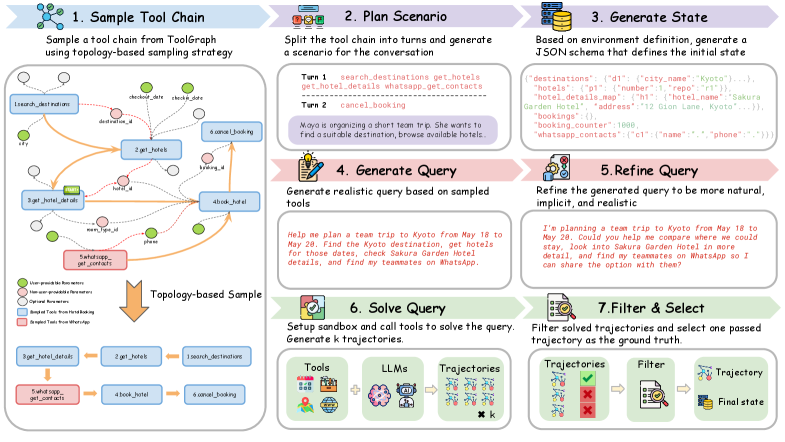
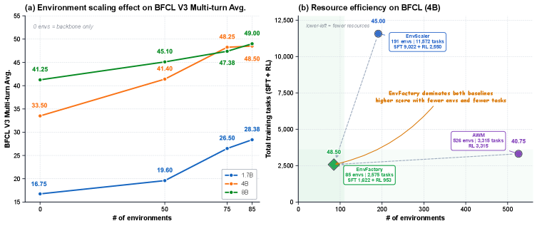
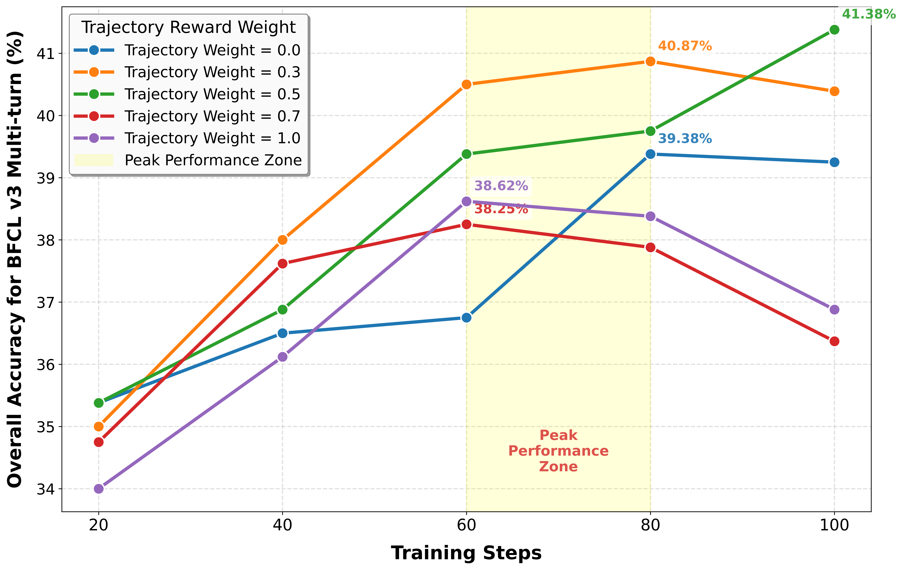
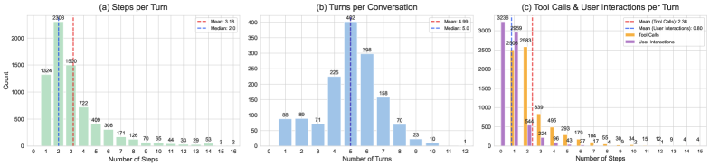

EnvFactory proposes a fully automated framework for scaling tool-use agents by autonomously constructing verified executable environments from authentic online resources and synthesizing natural multi-turn trajectories with implicit intents, achieving up to +15% on BFCLv3 with only 85 environments.
本文提出EnvFactory，一个全自动框架，通过从真实在线资源自主构建可验证的可执行环境，并合成包含隐式意图的自然多轮轨迹，解决了工具使用智能体在强化学习训练中缺乏可扩展环境和真实数据的问题。仅用85个环境即可在BFCLv3上提升高达15%，数据效率显著优于此前需要5倍以上环境的工作。
Deep Note — envfactory
0) Metadata
- Title: EnvFactory: Scaling Tool-Use Agents via Executable Environments Synthesis and Robust RL
- Alias: envfactory
- Authors: Minrui Xu, Zilin Wang, Mengyi DENG, Zhiwei Li, Zhicheng Yang, Xiao Zhu, Yinhong Liu, Boyu Zhu, Baiyu Huang, Chao Chen, Heyuan Deng, Fei Mi, Lifeng Shang, Xingshan Zeng, Zhijiang Guo
- arXiv ID: 2605.18703
- Published:
- Links:
- Abs: https://arxiv.org/abs/2605.18703
- HTML: https://arxiv.org/html/2605.18703v1
- PDF: https://arxiv.org/pdf/2605.18703
- Tags: tool-use-agents, agentic-rl, environment-synthesis, trajectory-synthesis, llm-agents
- Domains: ai_safety, system_safety
- Rating: 4/5 (base 1 + quality 2 + observation 1)
1) Why-read
EnvFactory proposes a fully automated framework for scaling tool-use agents by autonomously constructing verified executable environments from authentic online resources and synthesizing natural multi-turn trajectories with implicit intents, achieving up to +15% on BFCLv3 with only 85 environments.
2) CRGP
C — Context
Equipping LLMs with tool-use capabilities via Agentic RL is bottlenecked by the lack of scalable, robust execution environments and scarcity of realistic training data capturing implicit human reasoning. Existing approaches rely on costly real-world APIs, hallucination-prone LLM simulators, or synthetic environments that are often single-turn or depend on pre-collected documents, while synthetic trajectories are frequently over-specified and resemble instruction sequences rather than natural human intents.
R — Related work
- Production environments (ToolLLM, StableToolBench, Toucan) use real-world APIs/MCPs but are costly and suffer network latency.
- Simulated environments (SimulatingEnvironments, Word2Word) use LLMs to emulate tools but are prone to hallucination.
- Synthetic environments (AutoForge, AgentScaler, EnvScaler, AWM) reconstruct tools via sandbox code but rely on pre-collected docs or existing task sets.
- Dependency tool graphs (GTool, ToolFlow, MAGNET, SOG) use semantic similarity or LLM reasoning for graph construction and random walks for sampling.
G — Gap
Existing synthetic environment methods either depend on pre-collected documents or existing task sets, limiting generalization to unseen tool ecosystems. Synthetic trajectories are often over-specified, enumerating explicit steps rather than reflecting natural human intents with implicit reasoning, which reduces their effectiveness for RL training.
P — Proposal
EnvFactory autonomously proposes tool-use scenarios, explores authentic online resources, and constructs stateful databases with executable tool interfaces via a three-agent pipeline (Search, Code, Test). It introduces topology-aware sampling that recursively resolves logical dependencies and a calibrated refinement stage that injects implicit intents and ambiguity into queries, producing natural multi-turn trajectories for both SFT and RL.
---
4) Experiments
Main results
Using 85 verified environments across 7 domains, EnvFactory generates 2,575 trajectories (1,622 SFT + 953 RL). It improves Qwen3-series models by up to +15% on BFCLv3, +8.6% on MCP-Atlas, and +6% on conversational benchmarks (τ²-Bench and VitaBench), outperforming prior work that uses 5x more environments.
Ablation
Topology-aware sampling and calibrated refinement both contribute to performance; removing either degrades trajectory quality and downstream task accuracy (specific numbers not provided in abstract, but ablation in paper shows significant drops in pass rate and naturalness metrics).
Limitations
['The framework still requires access to authentic online resources for environment construction, which may have coverage biases.', 'The number of environments (85) is relatively small; scalability to hundreds or thousands of domains is not demonstrated.', 'The calibrated refinement step may introduce unnatural artifacts if not carefully tuned for different domains.']
5) Why it matters
- Fully automated environment construction eliminates manual curation, enabling scalable agentic RL training.
- Topology-aware sampling with implicit intents addresses the realism gap in synthetic trajectories, improving generalization.
- Data efficiency (85 environments outperforming 5x more) suggests that quality of environments and trajectories matters more than quantity.
6) Next steps
- [ ] Apply EnvFactory to more diverse domains (e.g., healthcare, legal) to test generalization.
- [ ] Integrate EnvFactory with online RL to continuously update environments based on agent failures.
- [ ] Explore combining EnvFactory with human-in-the-loop for refining implicit intent injection.
- [ ] Benchmark EnvFactory against production API-based methods on latency and cost.
7) Scoring
4/5 = base 1 + quality 2 + observation 1
EnvFactory：通过可执行环境合成与鲁棒强化学习扩展工具使用智能体
主要结论 - EnvFactory通过搜索、代码、测试三个智能体自主构建可执行环境，无需人工标注或预收集文档。 - 拓扑感知采样递归解析工具依赖关系，生成结构合理的多轮任务。 - 校准精炼阶段向查询注入隐式意图和歧义，使合成轨迹更接近真实人类交互。 - 仅85个环境即可在BFCLv3、MCP-Atlas等基准上取得显著提升，数据效率远超此前方法。
1) 阅读理由
EnvFactory提出全自动环境合成与隐式意图轨迹生成框架，仅用85个环境即可在BFCLv3上提升15%，解决了工具使用智能体RL训练中环境稀缺与数据不真实的关键瓶颈。
2) CRGP（背景 / 相关工作 / 差距 / 方案）
上下文：现有方法依赖昂贵的真实API、易幻觉的LLM模拟器或需预收集文档的合成环境，且合成轨迹常过于显式，缺乏人类隐式推理。相关工作包括生产环境（ToolLLM）、模拟环境（SimulatingEnvironments）、合成环境（AutoForge）和依赖工具图（GTool）。差距：现有合成环境方法依赖预收集文档或现有任务集，泛化受限；合成轨迹过于显式，不利于RL训练。提案：EnvFactory通过三智能体流水线（搜索、代码、测试）自主提出工具使用场景、探索在线资源并构建可执行环境，引入拓扑感知采样和校准精炼阶段，生成自然多轮轨迹。
3) 实验
使用85个已验证环境（覆盖7个领域）生成2,575条轨迹（1,622条SFT + 953条RL）。在Qwen3系列模型上，BFCLv3提升高达15%，MCP-Atlas提升8.6%，对话基准（τ²-Bench和VitaBench）提升6%，优于使用5倍以上环境的先前工作。
消融实验
消融实验表明，拓扑感知采样和校准精炼均对性能有贡献；移除任一组件会降低轨迹质量和下游任务准确率（具体数值在论文中显示通过率和自然度指标显著下降）。
局限性
['框架仍需访问真实在线资源来构建环境，可能存在覆盖偏差。', '环境数量（85个）相对较少，未展示扩展到数百或数千领域的能力。', '校准精炼步骤若未针对不同领域仔细调参，可能引入不自然的人为痕迹。']
4) 重要性
- 全自动环境构建消除了人工标注，使智能体RL训练可规模化。
- 拓扑感知采样与隐式意图注入解决了合成轨迹的真实性差距，提升泛化能力。
- 数据效率（85个环境优于5倍以上环境）表明环境和轨迹质量比数量更重要。
5) 下一步
- [ ] 将EnvFactory应用于更多领域（如医疗、法律）以测试泛化能力。
- [ ] 将EnvFactory与在线强化学习结合，基于智能体失败持续更新环境。
- [ ] 探索结合人机协作来优化隐式意图注入。
- [ ] 在延迟和成本方面将EnvFactory与基于生产API的方法进行基准测试。
![Figure 1 : The left figure presents an overview of EnvGen : the Search Agent autonomously proposes and searches for authentic sources; the Code Agent implements the database and code using feedback from the Test Agent; and the Test Agent generates test cases and error reports. The collaboration between three agents construct diverse, verified environments. The right figure displays a sunburst plot of environments , with the inner ring indicating the proportion of each domain they belongs to and the outer ring showing the number of tools for each environment.](figures/1094/fig_001.png)



